注意事項
- 意識、呼吸、循環、体温、顔色、発汗、疲労
- 疼痛、悪心、めまい、呼吸苦、体位による症状
- 安静度、体位・関節可動域の制限、転倒・転落リスク
- 創傷、皮膚疾患、手術部位、感染対策上の指示
- 点滴、酸素、ドレーン、カテーテル、モニター、装具
- 呼吸苦、胸部症状、顔色不良、冷汗
- 強い疼痛、めまい、悪心、急な疲労
- 意識や反応の変化
- 医療機器の抜去・閉塞・アラーム
- 本人が続行を望まない
目的
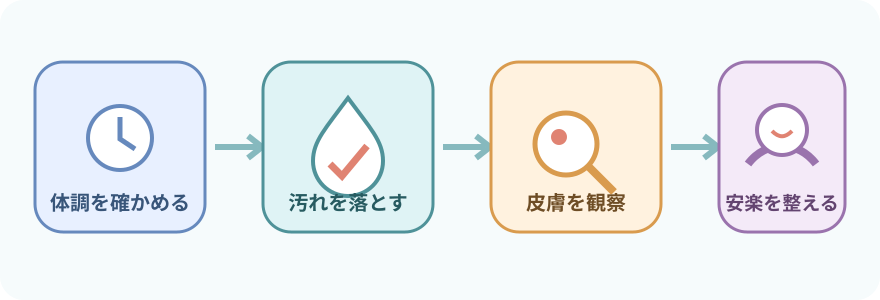
- 汗、皮脂、汚れを除去する
- 皮膚を清潔に保ち、不快感やかゆみを軽減する
- 皮膚の変化、圧迫、医療機器による損傷を早く見つける
- 爽快感、睡眠、整容、生活習慣を支える
- 関節の動きやセルフケア能力を確認する
観察項目
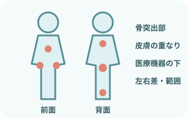
拭く手と、観察する目を一緒に動かす
- 皮膚：色、温度、乾燥、発汗、発赤、発疹、傷、浮腫
- 骨突出部：後頭部、肩甲部、肘、仙骨、踵など
- 皮膚の重なり：頸部、腋窩、乳房下、腹部、鼠径部
- 医療機器の下：チューブ、電極、装具、固定テープ周囲
- 動作：疼痛、拘縮、筋力、疲労、できるセルフケア
色調変化は左右差、範囲、消退の有無、熱感、硬さ、疼痛なども合わせる。皮膚の色だけで重症度を決めない。
必要物品
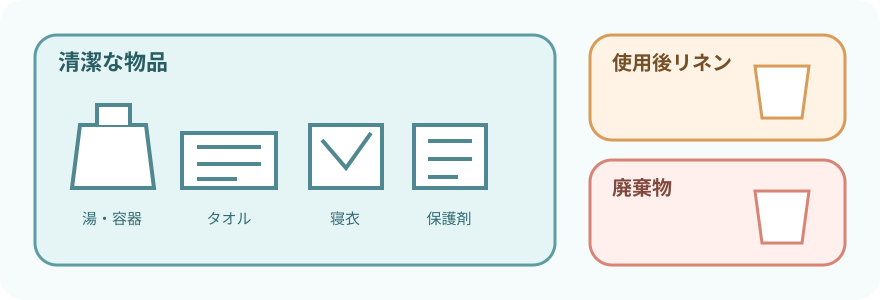
- 清拭用タオルまたは清拭布
- 患者に合う温度の湯
- 湯を入れる容器
- 施設採用の洗浄剤
- 乾いたタオル
- バスタオルまたは掛け物
- 防水シート
- 交換用寝衣
- 必要時、交換用シーツ
- 非滅菌手袋
- エプロン
- 飛散リスクに応じたマスク・眼の防護具
- 使用後リネンを入れる袋
- 廃棄物袋
- 必要時、保湿剤または皮膚保護剤
- 必要時、体位保持用クッション
タオルの枚数や湯温を一律の数値にしない。患者の感覚、皮膚状態、室温、使用方法に合わせる。洗い流さない清拭料は製品表示どおりに使用する。
手順
- 説明し、体調と希望を確認
本人確認、目的、範囲、体位、疲労時の合図を共有。できる部分、普段の習慣、湯温や洗浄剤の希望を確認する。
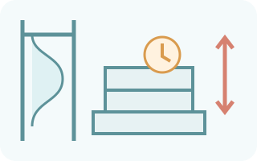
環境と物品を整える室温とプライバシーを確保。ベッドの高さを調整し、転落を防ぐ。清潔物品と使用後物品の場所を分ける。
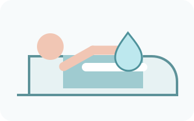
一部位だけ露出する掛け物で保温し、拭く部位だけを出す。湯や清拭材の温度を本人と確認。手指衛生と必要なPPEを行う。
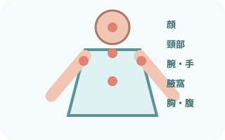
顔から上半身へ顔、頸部、上肢・手、腋窩、胸部、腹部を一部位ずつ清拭。眼周囲は刺激の少ない方法で、清潔な面を使う。
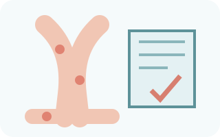
下肢と足を清拭片脚ずつ出し、下肢、足、足趾間を清拭。浮腫、冷感、傷、踵の発赤、趾間の湿潤を観察する。
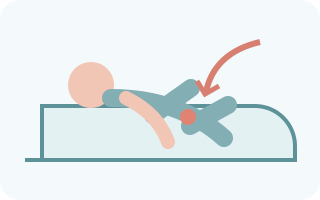
側臥位で背部・臀部を清拭チューブを確認して安全に体位変換。背部、臀部を清拭し、肩甲部、脊柱周囲、仙骨部の皮膚を観察する。
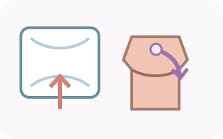
水分を残さず、必要時は保湿こすらず押さえて乾かす。腋窩や乳房下など皮膚の重なりも確認。保湿剤・皮膚保護剤は状態と製品表示に合わせる。
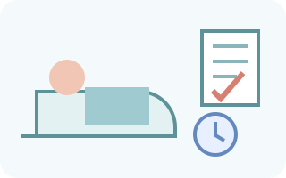
寝衣・体位・機器を整え、記録寝衣と寝具を整え、医療機器の位置・接続・作動を再確認。安楽な体位へ戻し、反応と皮膚所見を記録する。
拭き方と皮膚保護
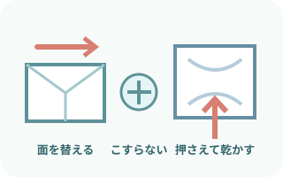
摩擦を増やさない
- 清拭布の汚れた面を折り込み、清潔な面へ替える
- 皮膚の状態に応じて圧と回数を減らす
- 同じ場所を何度も往復してこすらない
- 洗浄剤を洗い流す方法か、洗い流さない方法かを確認する
- 最後は乾いたタオルで押さえて水分を取る
高齢者、浮腫、ステロイド使用、低栄養などで皮膚が脆弱な場合は、清拭布と寝具の摩擦・ずれにも注意する。
寝衣交換と医療機器
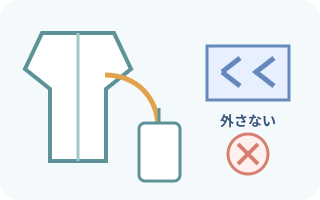
点滴・ドレーンを外して交換しない
- チューブの接続、余裕、固定、挿入部を先に確認する
- 一般に脱衣は非留置側から、留置側を最後にする
- 着衣は留置側から袖を通し、非留置側を最後にする
- バッグやポンプを衣類へ通す方法は院内手順へ
- 終了後に屈曲、圧迫、牽引、接続、アラームを再確認する
麻痺、骨折、術側、拘縮、疼痛がある場合も、脱衣・着衣の順序は個別に調整する。無理に関節を動かさない。
方法を変える場面
- 全身状態が不安定：全身を一度に行わず、必要部位へ短縮する
- 創傷・手術部位：通常の清拭布で創面をこすらず、ドレッシングと個別手順を確認する
- 失禁：排泄物を長時間触れさせず、陰部洗浄と皮膚保護を組み合わせる
- 感染対策：標準予防策に加え、必要な経路別予防策と物品処理を行う
- 消毒薬含有清拭材：ルーチンの清拭と同一視せず、適応、禁忌部位、接触時間、乾燥方法を製品と院内手順で確認する
報告・記録
すぐに報告する変化
- 呼吸・循環・意識の悪化、強い疼痛、急な疲労
- 消えない発赤、水疱、皮膚剥離、出血、熱感、腫脹
- 創部やドレッシングの汚染・漏れ
- 点滴・ドレーン・カテーテルの抜去、位置変化、閉塞
- 本人が訴える新しい症状
記録すること
- 実施範囲、方法、使用した洗浄剤・保湿剤
- 全身状態と皮膚所見
- 本人が行えた動作と必要な介助
- 実施中・実施後の反応
- 報告内容と、その後の対応